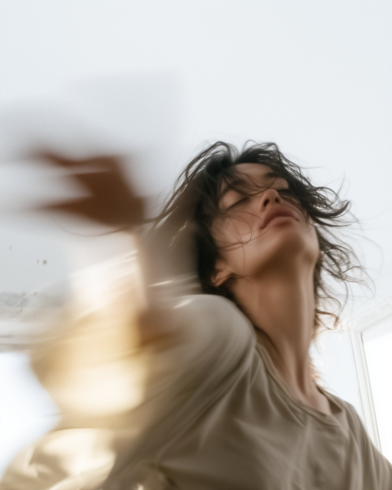

Ci sono cose che capisci solo facendole.
Passiamo molto tempo a cercare di capire ciò che viviamo attraverso il pensiero. OLTRE nasce dalla possibilità di partire da un altro punto: il corpo.
Muoversi, respirare, fermarsi, percepire, entrare in relazione diventano strumenti per osservare quello che succede dentro e intorno a noi.
Pratiche di movimento, respiro e ascolto per gruppi di circa trenta persone, ogni volta in uno spazio diverso della città.Nessun contributo, nessuna offerta consigliata, nessuna tessera.
La pratica si sposta negli spazi culturali della città, invece di chiederti di entrare in un centro dedicato.
Circa trenta persone per pratica, perché chi guida possa vedere ognunə.
Chi guida accompagna un'esplorazione, non insegna una forma da eseguire correttamente.
Molte pratiche prevedono momenti in coppia: puoi venire anche da solə.

spazio sicuro · a mio agio · inclusiva · delicatezza · accoglienza · attento alla persona · ascolto personale · intensa · significativa · fatene di più
«Mi ha aiutato tanto e mi ha smosso qualcosa a livello interiore che ora porterò dietro con me nella vita quotidiana.»
«Ho molto apprezzato la chiarezza delle spiegazioni e lo spazio sicuro che è stato creato.»
«L'esperienza è stata davvero bella, inclusiva, guidata bene e mi è piaciuta tantissimo la vostra delicatezza e accoglienza.»
Oltre è itinerante: ogni tappa vive in uno spazio diverso della città. Cerchiamo spazi che possano accogliere gruppi di circa trenta persone in un ambiente raccolto e acusticamente protetto.
Portiamo noi programma, conduzione e comunicazione.
A novembre. Data e spazio li annunciamo su Instagram.
Niente. Nessun contributo, nessuna offerta consigliata, nessuna tessera.
No. Le pratiche sono pensate per chi non ne ha mai fatta una. Chi guida accompagna un'esplorazione, non insegna una forma da eseguire correttamente.
Sì. Molte persone arrivano da sole e le coppie si formano sul momento.